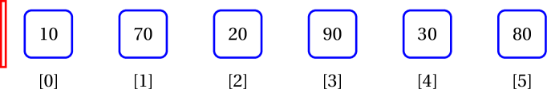
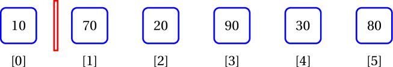
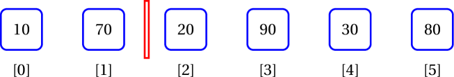
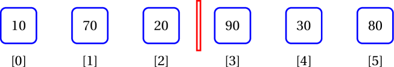
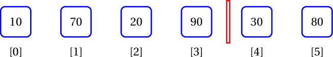
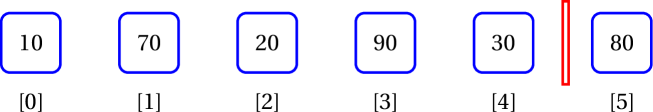
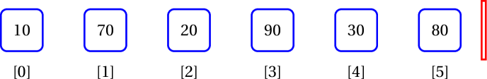

Iterating over lists
Learning Outcomes
- Be able to iterate over built in lists
Author: Gaurav Gupta
User-defined class used
class Rectangle {
public int width, height;
public Rectangle(int w, int h) {
width = w;
height = h;
}
public String toString() {
return width + " by " + height;
}
}
Enhanced for loop
Until now, we’ve use the classic counter-based loop to traverse through arrays and lists (for int i=0; ...).
But when you don’t really need the index and just want to use a construct where it says,
“For every item (current) in the collection, use current for something”
This kind of traversal is provided by the enhanced for loop.
Syntax
for(type current: array/list) {
use current
}
Example with built-in class
ArrayList<Integer> list = new ArrayList<Integer>();
list.add(10);
list.add(70);
list.add(20);
list.add(90);
int total = 0;
for(Integer item: list) {
total = total + item;
}
In this example, a reference copy of the current item is made into item, which is then used.
Example with user-defined class
ArrayList<Rectangle> list = new ArrayList<Rectangle>();
list.add(new Rectangle(1, 3));
list.add(new Rectangle(7, 4));
list.add(new Rectangle(2, 8));
list.add(new Rectangle(9, 6));
for(Rectangle r: list) {
System.out.println(r);
}
In this example, a reference copy of the current item is made into r, which is then used.
When should one use the enhanced for loop?
Enhanced for loops are used when you don’t need the index for anything besides accessing the item at that index.
Examples of when enhanced for loop should be used
- Finding the sum of all items in array/list
- Finding the sum of all items (that optionally satisfy some condition(s)) in array/list
- Finding the highest/smallest item in an array/list
Examples when it’s better (IMO) to use a counter-based loop
- Checking if array/list is sorted (because you need to compare an item with the item after it, so you need to access items at index
iandi+1). - Finding the location of the highest/smallest item in an array/list.
- Finding if an array/list contains any duplicates.
- Sorting an array/list.
- Performing binary search over a sorted array/list.
Problem with enhanced for loop
You can update the instance variables of items of a list in an enhance for loop but not re-reference them. Similarly, you cannot add or remove items in a list in an enhanced for loop.
For example, assuming the the same Rectangle class definition, we can increase the width of all items in an ArrayList named rectangles of Rectangle objects, using:
for(Rectangle r: rectangles) {
r.width++;
}
However, we cannot re-reference the items of the list as,
//Compiles, but DOES NOT achieve desired result
for(Rectangle r: rectangles) {
r = new Rectangle(10, 20);
}
This is because r is a reference copy of the current item and what we are re-referencing is that reference copy, and not the reference that is in the list.
Also, we cannot add or remove items.
Trying to add items:
//throws ConcurrentModificationException
for(Rectangle r: rectangles) {
if(r.height < 20) {
int idx = rectangles.indexOf(r);
rectangles.add(idx, new Rectangle(2, 5));
}
}
Trying to remove items:
//throws ConcurrentModificationException
for(Rectangle r: rectangles) {
if(r.width < 10) {
rectangles.remove(r);
}
}
Hence, we look at iterators.
Iterator
There is a powerful and consistent way to traverse almost all data structures in Java - Iterator, and the class that implements the Iterator interface for lists is ListIterator.
A class that implements Iterator interface can add other methods too. ListIterator is one such class.
Following are the instance methods in ListIterator class:
| Type | Method | Description | ||
|---|---|---|---|---|
| boolean | hasNext() | Returns true if this list iterator has more elements when traversing the list in the forward direction. | ||
| E | next() | Returns the next element in the list and advances the cursor position. | ||
| boolean | hasPrevious() | Returns true if this list iterator has more elements when traversing the list in the reverse direction. | ||
| E | previous() | Returns the previous element in the list and moves the cursor position backwards. | ||
| int | nextIndex() | Returns the index of the element that would be returned by a subsequent call to next(). | ||
| int | previousIndex() | Returns the index of the element that would be returned by a subsequent call to previous(). | ||
| void | add(E e) | Inserts the specified element into the list (optional operation). | ||
| void | remove() | Removes from the list the last element that was returned by next() or previous() (optional operation). | ||
| void | set(E e) | Replaces the last element returned by next() or previous() with the specified element (optional operation). |
The advantages of using an iterator are,
- It’s consistent across any class that implements the
Iteratorinterface. - It’s intuitive as in “while the collection has another item, access it”.
- Ability to modify the contents of the list while traversing it (unlike an enhanced for loop).
- Provision for
forEachRemaining(not covered in this unit).
- Provision for
Creating and using a ListIterator on a List object
A ListIterator iter is created on a List object list as:
ListIterator<Integer> iter = list.listIterator();
Assuming the list is [10, 70, 20, 90, 30, 80], the initial state of iter is represented by the red block.

You can check if there is an item in front of the current position of the iterator as:
boolean itemExists = iter.hasNext();
Once you check an item exists, you can access it as:
Object item = iter.next();
This (accessing an item) results in the iterator moving forward by one.
Complete example
ArrayList<Integer> list = new ArrayList<Integer>(Arrays.asList(10, 70, 20, 90, 30, 80));
ListIterator<Integer> iter = list.listIterator();
while(iter.hasNext()) {
System.out.print(iter.next()+" ");
}
//displays 10 70 20 90 30 80
Initial state
After first iteration

After second iteration

After third iteration

After fourth iteration

After fifth iteration

After sixth iteration

Starting from a specific index
You can pass the index of the item BEFORE which you want the iterator to be placed.
Assuming ArrayList list holds the values [10, 70, 20, 90, 30, 80], the following code will display 30 80.
ListIterator<Integer> iter = list.listIterator(4);
while(iter.hasNext()) {
System.out.print(iter.next()+" ");
}
Initial state
After first iteration
After second iteration
Back to front iteration
Just like hasNext() and next(), the methods hasPrevious() and previous() also exist.
You can traverse a list from back to front as:
ListIterator<Integer> iter = list.listIterator(list.size());
while(iter.hasPrevious()) {
System.out.print(iter.previous()+" ");
}
Assuming ArrayList list holds the values [10, 70, 20, 90, 30, 80], the following code will display 80, 30, 90, 20, 70, 10.
Initial state
After first iteration
After second iteration
After third iteration
After fourth iteration
After fifth iteration
After sixth iteration
ListIterator<Integer> iter = list.listIterator(list.size());
while(iter.hasPrevious()) {
System.out.print(iter.previous()+" ");
}
Adding items using iterator
After add is executed, the cursor is after the added item.
Front to back example
ArrayList<Integer> list = new ArrayList<Integer>(Arrays.asList(10, 70, 20, 90, 30, 80));
ListIterator<Integer> iter = list.listIterator();
while(iter.hasNext()) {
iter.add(0);
iter.next();
}
//list is now 0, 10, 0, 70, 0, 20, 0, 90, 0, 80, 0, 30
One must be careful while using add during reverse traversal since the cursor is after the added item.
Back to front example - BUGGY
ArrayList<Integer> list = new ArrayList<Integer>(Arrays.asList(10, 70, 20, 90, 30, 80));
ListIterator<Integer> iter = list.listIterator(list.size());
while(iter.hasPrevious()) {
iter.add(0);
iter.previous();
}
//INFINITE LOOP
Back to front example - CORRECT
ArrayList<Integer> list = new ArrayList<Integer>(Arrays.asList(10, 70, 20, 90, 30, 80));
ListIterator<Integer> iter = list.listIterator(list.size());
while(iter.hasPrevious()) {
iter.add(0);
iter.previous(); //go left before the added 0
iter.previous(); //go another left before the item already present
}
//list is now 10, 0, 70, 0, 20, 0, 90, 0, 30, 0, 80, 0
Removing items using iterator
The remove method removes from the list, the item most recently accessed using next() or previous(). Cursor remains unchanged after calling remove.
Note: a call to remove can only be made once per call to next or previous. It can be made only if add has not been called after the last call to next or previous.
Front to back example
ArrayList<Integer> list = new ArrayList<Integer>(Arrays.asList(10, 70, 20, 90, 30, 80));
ListIterator<Integer> iter = list.listIterator();
while(iter.hasNext()) {
if(iter.next() > 30) {
iter.remove();
}
}
//list is now 10, 20, 30
Back to front example
ArrayList<Integer> list = new ArrayList<Integer>(Arrays.asList(10, 70, 20, 90, 30, 80));
ListIterator<Integer> iter = list.listIterator(list.size());
while(iter.hasPrevious()) {
if(iter.previous() > 30) {
iter.remove();
}
}
//list is now 10, 20, 30
Updating items using iterator
The set method updates the item most recently accessed using next() or previous(). Cursor remains unchanged after calling set.
Front to back example
ArrayList<Integer> list = new ArrayList<Integer>(Arrays.asList(10, 70, -20, 90, -30, -80));
ListIterator<Integer> iter = list.listIterator();
while(iter.hasNext()) {
if(iter.next() < 0) {
iter.set(0);
}
}
//list is now 10, 70, 0, 90, 0, 0
Back to front example
ArrayList<Integer> list = new ArrayList<Integer>(Arrays.asList(10, 70, -20, 90, -30, -80));
ListIterator<Integer> iter = list.listIterator(list.size());
while(iter.hasPrevious()) {
if(iter.previous() > 0) {
iter.set(0);
}
}
//list is now 0, 0, -20, 0, -30, -80